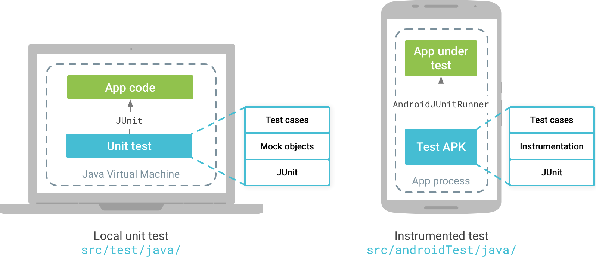

Android 测试 （一）--测试总览
android 测试基于 Junit，我们既可以在 JVM 运行单元测试，也可以在 Android 设备上运行功能测试
测试类型
当使用 Android studio 来写测试程序时，你的代码必须放在两个指定的文件夹中。
Local unit testsWARNING: No manifest file found at ./AndroidManifest.xml.
Falling back to the Android OS resources only.
To remove this warning, annotate your test class with @Config(manifest=Config.NONE).
位于 module-name/src/test/java/.
这些测试时运行在本地 JVM，没有运行 Android framework API的权限
可以参考这个
Instrumented test
Instrumented Unit test 是允许在真机或者模拟器上的，而不是运行在本地环境下的虚拟机中。如果在测试时需要使用 instrumentation information(例如 app Context),或者你需要获取 Android 框架的组件(例如 SharedPrederences），这时候你就可以创建一个 instrumented unit test。使用 Instrumented unit test 可以帮助减少编写模拟环境的代码。当然你也可以使用一些 mock 框架。使用 Instrumented unit test 可以很好的利用 Android framework api 和 supporting API。
位于 module-name/src/androidTest/java/.
测试运行在 Android 设备上或者 Android 模拟器上
在测试过程中，这些测试代码会被编译成 apk 运行在设备上。系统会将这个测试程序 和待测程序运行在同一个进程中，所以测试程序能调用待测程序的方法。
更多例子
- Building Instrumented Unit Tests 不使用 mock 对象满足 Android 依赖的情况下，构建复杂的 unit test
- Automating User Interface Tests 创建测试，以验证用户界面正确行为对单个应用程序内或跨多个应用程序的交互用户交互。
- Testing App Component Integrations 验证用户不直接与交互的组件行为，例如service或Content Provider

然而，unit test和instrumented test 只是形式来帮助区分，从Android平台（硬件设备或仿真器上）上运行测试和在本地JVM上运行测试。
构建完整的测试套件的时候，你应该明白真正的测试类型如下表所述。
| 类型 | 子类型 | 描述 |
|---|---|---|
| Unit tests | Local Unit Tests | 只在 JVM上运行，当没有 Android framework 的相关依赖，或者 mock 了这部分依赖时，这部分测试运行的会非常快 |
| Instrumented unit tests | 这些测试运行在 Android 设备或者 Android 模拟器上。这些测试有获取 Instrumentation 信息的权限，比如获取当前的 context。当你 mock 的对象满足不了 Android 的依赖时，可以使用这个测试 | |
| Integration Tests（集成测试） | 组件在一个 app 中 | 这种类型的测试验证目标应用程序的行为，当用户执行特定的操作，还是在进入活动特定的输入如预期。举个栗子，当用户做一些交互动作是，他可以用来验证程序返回正确的UI响应。 Espresso的UI测试框架允许你以编程方式模拟用户操作和测试复杂的内部应用程序的用户交互。 |
| 组件在不同的 app 中 | 这种类型的测试验证不同的用户应用程序之间或用户应用程序和系统应用之间的相互作用正确的行为。比如，当用户执行 Android 的设置菜单操作时，你可能想测试你程序的行为。此类的框架有 UI Automator |
测试 API
以下都是在 Android 测试中常用的 api。
JUnit
你可以采用类似 JUnit 4 的方式来写单元测试或者集成测试。framework提供了一种很方便的方式来帮我们设置 、去除、断言
一个基本JUnit 4测试类是包含一个或多个测试方法的Java类。一种测试方法始于@Test注释，其中包含的代码验证一个单独的功能（即一个逻辑单元）
下面例子是使用Espresso APIs（UI 测试框架）的一个集成测试，用来测试点击一个 UI 组件，检查字符串得到相应的显示
@RunWith(AndroidJUnit4.class)
@LargeTest
public class MainActivityInstrumentationTest {
@Rule
public ActivityTestRule mActivityRule = new ActivityTestRule<>(
MainActivity.class);
@Test
public void sayHello(){
onView(withText("Say hello!")).perform(click());
onView(withId(R.id.textView)).check(matches(withText("Hello, World!")));
}
}
在JUnit 4测试类，你可以通过以下注释召唤出在特殊处理你的测试代码段：
- @Before：主要是测试代码的一些设置。每段@test 执行之前都会先执行 @Before注解 的方法。你可以有多个@Before方法，但在测试类调用这些方法不能保证的顺序。
- @After:主要是一些释放资源的操作。每段@test 执行之后都会执行 @After注解 的方法。你可以有多个@After方法，用来释放内存中的资源
- @Test: 表示这个方法是测试代码。每个测试类可以有多个测试方法。每个方法都要标明这个注解
- @Rule: 可以通过 Rule 灵活的添加和重复使用测试方法。在 Android 测试中，如ActivityTestRule或ServiceTestRule（这些都在 support 包中）
- @BeforeClass: 为每个测试类指定静态方法。每个测试类之后调用这个一次。比如连接到数据库的操作可以使用这个注解
- @AfterClass：使用此批注指定静态方法的测试类类中的所有测试都运行之后才调用。该测试步骤是释放在@BeforeClass块分配的资源
- @Test(timeout=): 如果测试启动，但给定的超时期限内没有完成，它会自动失败。你必须以毫秒为单位指定超时周期
更多的注解可以查看文档 junit 注解 和 android 注解
Android Testing Support Library
Android Testing Support Library 提供了一系列 api 来帮助我们app快速构建测试代码。包括 JUnit 4 和 UI 测试。
- AndroidJUnitRunner：一个JUnit 4兼容的测试运行为Android。
- Espresso：一个UI测试框架;适用于应用程序内的功能UI测试。
- UI Automator：适用于系统和安装的应用程序之间的交叉应用功能UI测试的UI测试框架。
Assertion classes
由于Android测试支持库API继承自JUnit，您可以使用断言方法来显示测试的结果。断言方法比较测试返回值和实际值，并且如果该比较测试失败抛出AssertionException。使用断言比记录更方便，并提供更好的测试性能。
为了简化测试开发，你应该使用Hamcrest库，它可以让你创建使用Hamcrest匹配器的API更加灵活的测试。
Monkey and monkeyrunner
Android SDK提供了两种功能测试工具
Monkey
这是一个命令行工具。发出按键，触摸和手势的随机流命令。可以使用ADB工具来运行它，并用它来做压力测试，汇报遇到的错误的
测试系列博客目录
- Android 测试 （一）--测试总览 http://xuyushi.github.io/2016/11/05/Android%20%E6%B5%8B%E8%AF%95%20%EF%BC%88%E4%B8%80%EF%BC%89--%E6%B5%8B%E8%AF%95%E6%80%BB%E8%A7%88/
- Android 测试 （二）--Instrumented Unit Tests http://xuyushi.github.io/2016/11/05/Android%20%E6%B5%8B%E8%AF%95%20%EF%BC%88%E4%BA%8C%EF%BC%89--Instrumented%20Unit%20Tests/
- Android 测试 （三）--Local Unit Tests http://xuyushi.github.io/2016/11/06/Android%20%E6%B5%8B%E8%AF%95%20%EF%BC%88%E4%B8%89%EF%BC%89--Local%20Unit%20Tests/
- Android 测试 （四）-- 实战分析 http://xuyushi.github.io/2016/11/13/Android%20%E6%B5%8B%E8%AF%95%20%EF%BC%88%E5%9B%9B%EF%BC%89--%20%E5%AE%9E%E6%88%98%E5%88%86%E6%9E%90/
翻译自（有增删 2016-11-05）
https://developer.android.com/training/testing/start/index.html